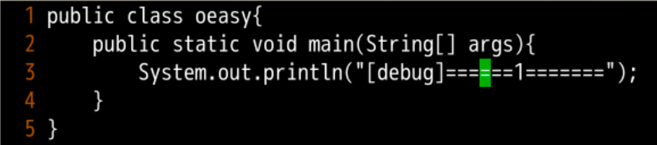
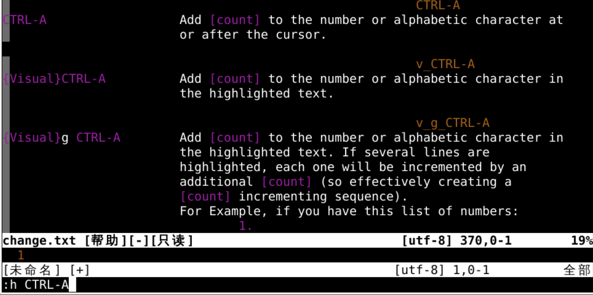
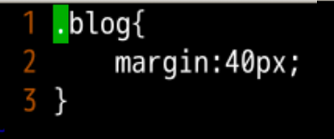
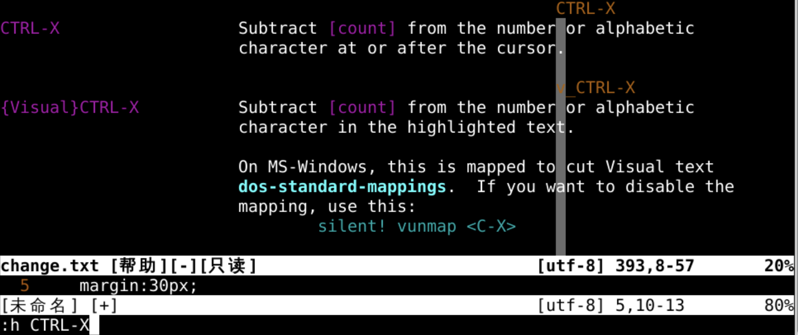
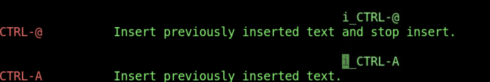
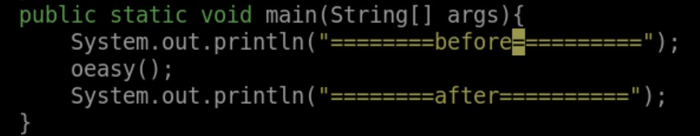
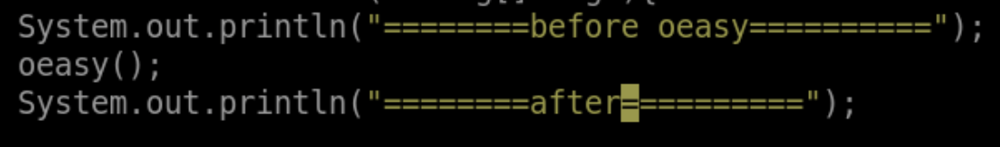
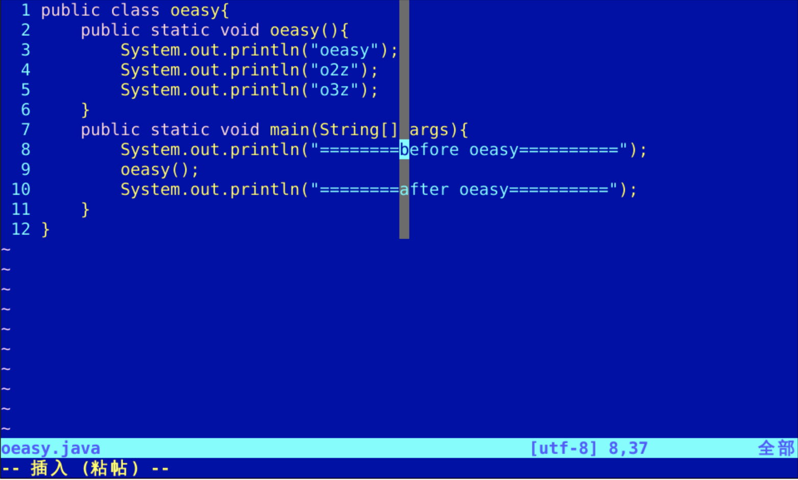
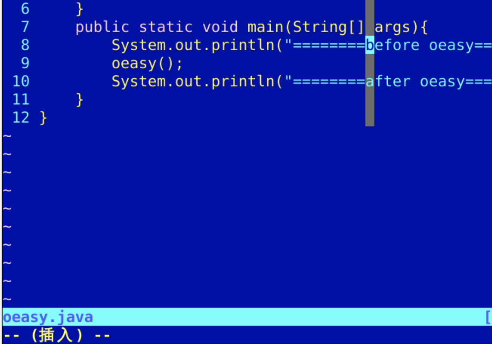
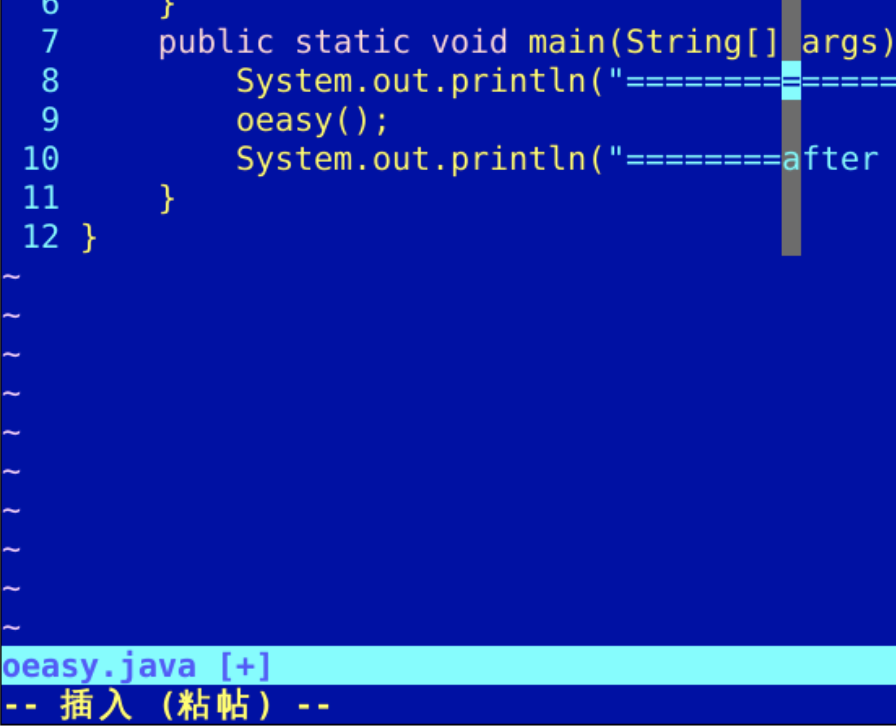

综合练习
回忆上节课内容🤔
- 上次我们学到了各种的替换模式
- r，替换当前光标的字符
- R，进入替换模式
- ~，改变大小写
- 这次来个综合练习吧！
- 我们这次要完成这样一个任务
- 我们有的时候需要写日志
- System.out.println("[debug]1=====");
- 但是这些日志,如何快速插入
- 并且自动编号呢？
- 我们来试试
加法操作

- 首先输入好基本内容，如上图
- 并且在System那一行yy
- 然后p进行粘贴
- 然后ctrl+a
- 将具体的数字加1
- 这到底是为什么？🧐
查询帮助

- 然后再p进行粘贴
- 然后3ctrl+a，将原来的1加3得到4
- 如果是减法的话，可以用ctrl+x实现
减法操作

- 我希望快速添加一条 .news 的记录，其中 margin:30px;
- 首先y2j复制3行
- 然后G到最后一行
- 小写p把新内容粘贴在后面
- l向右移动到
b字符
- cw，剪切blog
- 并把模式切换到插入模式
- 输入newsesc
- j,向下1行
- f4，光标跳转到
4
- r3,光标所在字符修改为
3
还是刚才的操作
- u撤销回来
- 在margin行的任意位置
- 最后一步变成 10ctrl+x
- 试一下效果
- 查看帮助

- ctrl+a都在Normal正常模式下做的
- 如果是在插入模式下做
- 什么效果呢
重复插入

来试试

- i进入插入模式
- 插入
oeasy
- ctrl+c结束插入模式
- 这个时候寄存器
".中的内容为oeasy
- 正常模式下把光标移动到下面位置
- 再进入插入模式

- 然后ctrl+a就可以把
".寄存器的内容插上去了
- 相当于插入模式下ctrl+r .
- 也相当于正常模式下
".p
- 就是把.寄存器里面的东西粘贴上来
一次命令
- 插入模式下有一种
一次命令模式
- 快捷键是 ctrl+o
:h i_ctrl-o
- 插入模式下，执行一次命令
- 然后回到插入模式
- 比如光标在如下位置，模式为插入

- 原来的方法是
- ctrl+c
- 先退回到正常模式
d2w可以把两个单词删除- i并进入插入模式
- 不止一种思路
- 灵活多变
试试一次命令模式

- 执行一次正常模式命令
d2w
- 执行之后还是保持在插入模式

- 如果想删到oeasy之前的位置就可以
- ctrl+o
- d/oeasy 回车
- 然后会自动回到插入模式
- 也许你可试试如何才能让按键更少
- 就像用更少的杆数让高尔夫球进洞一样
总结
- 这次我们主要就是综合运用
- 很好玩的，更快速的解决问题
- 进行计算
- ctrl+a，将具体的数字加1
- ctrl+x，将具体的数字减1
- 5ctrl+a，将具体的数字加5
- 一次命令模式
- ctrl+o
- 插入模式下执行一次命令，然后回到插入模式
- 下次我们进入新的领域
- 下次再说 👋